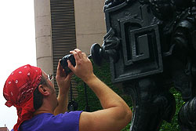

urban 2004 - tommy short
requirements to note:
1) All photos must be at least 640x480.
2) Must take one self-portrait.
3) Teams are welcome
(one camera, several people).
contest outline
Okay, here's the deal. Contest check-in is between 8 a.m. & 8:30 a.m. Saturday, June 10th at Screenland Theatre. Bring yourself and your digital camera (only digital cameras are allowed).1) You are given a map with the safari boundaries.
2) You have 4 hours to shoot anything within the boundary.
3) At the end of the 4 hours, we meet back at Screenland Theatre. We will then download all photos you have taken during the shoot. Laptops and card readers of all kinds will be on hand.
4) You then have 2 days to decide which photos are your top ten. Shoot us an email with the file names. We'll post your top ten to this site.
5) Once we have all photos up, you have one week to vote. You have a total of 10 votes and cannot vote on your own. 1 vote per photo.
6) Votes are tallied and the winner is announced here on the site.
common questions
q) what do you win?a) It's not really about winning. The idea behind the contest is to get outside and get creative. Creative's often whine that they never have enough time to just be creative for the sake of being creative. So, instead of whining about it all the time. I made a contest. But, since it is a contest, you gotta win something right? The winner will receive a $25 gift certificate to amazon.com, the right to have your winning image featured in promotional materials for the next contest and, the admiration of others. It's not like winning a car but, hey, it's just me here. If anyone knows someone at Toyota, have them give me a call.
q) that's it? that's all I win?
a) Yup. Well, no, not really. A hidden secret over the years has been that every contestant receives a commemorative dvd containing all of the images shoot during the safari. As a contestant, you'll sign over rights to the other contestants to use your images royalty free. Who knows, one of your images may wind up on the cover of Time. Highly unlikely but, you never know. If your not comfortable contributing to the greater good of the creative world, don't participate. Forms, details and legal mumbo jumbo are available the day of the contest.
q) is it a group lead event? when you go out to shoot, who do you go with?
a) No tour, no group. Just four hours, a map, a digital camera and you. You may enter as a team and share one camera. Take a car, a bus, a taxi, a bike or just walk. It's up to you where you go and how you get there. We usually all pile in an SUV once we have everyone signed in and drive to different areas of the city.
q) does it cost anything?
a) Nope. Completely free. Thanks to some great sponsors and a personal credit card, I've been able to keep costs relatively low (dang collection agencies). Seriously, it's a labor of love. What better way to spend a summer afternoon? Hanging out with some friends and checking out what each other shot. The results have been nothing short of stunning. I'm always amazed at what people shoot.